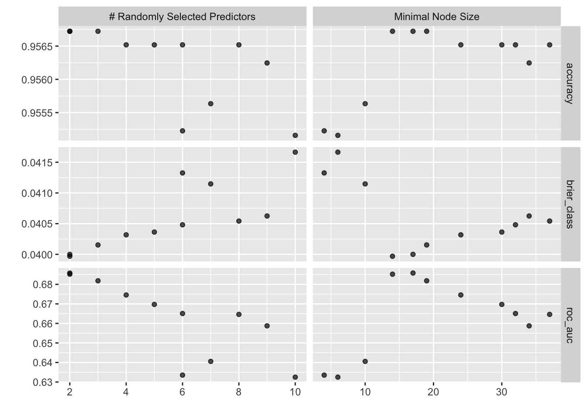
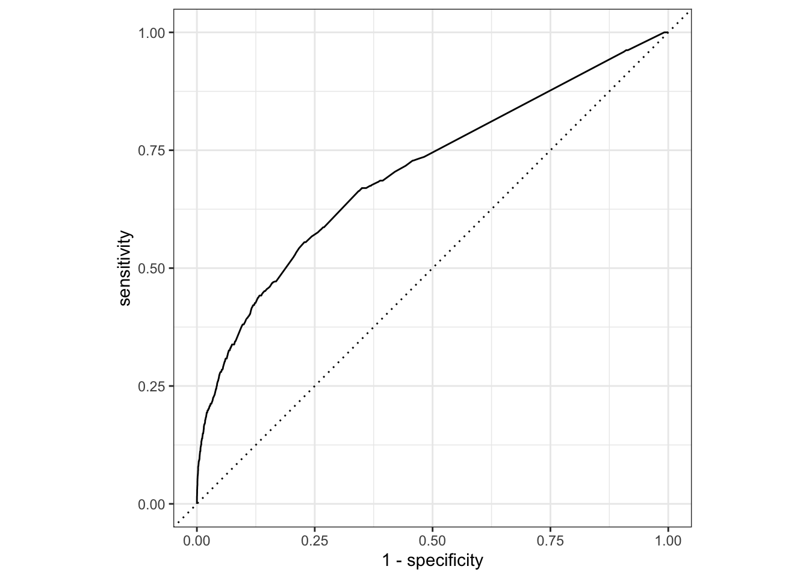

#install.packages("ranger")
library(tidyverse)
library(tidymodels)
library(here)
library(rpart.plot)
library(ranger)
library(skimr)Random Forest
Model Overview
I used a random forest model to predict weapon-carrying behavior in schools. Random forest is a non-parametric ensemble method that builds many decision trees and combines their predictions. Unlike a single decision tree, which is often unstable and prone to overfitting, random forest improves predictive performance by averaging results across many trees.
Loading Packages
Loading the Data
analysis_train <- readRDS(here("models", "data", "analysis_train.rds"))
analysis_test <- readRDS(here("models", "data", "analysis_test.rds"))
analysis_fold <- readRDS(here("models", "data", "analysis_folds.rds"))Data Preprocessing
Before modeling, I created a recipe that:
Imputes missing numeric values using the mean
Imputes missing categorical values using the mode
Converts categorical predictors into dummy variables
weapon_carry_recipe_rf <-
recipe(WeaponCarryingSchool~., data = analysis_train) %>%
step_impute_mean(all_numeric_predictors()) %>%
step_impute_mode(all_nominal_predictors()) %>%
step_dummy(all_nominal_predictors())Model Specification
I defined a random forest classifier using the ranger engine. I tuned the mtry (number of predictors sampled for each split) and min_n (minimum node size). I also enabled permutation-based variable importance for interpretation later.
weapon_carry_spec_rf <-
rand_forest(
mtry = tune(),
min_n = tune(),
trees = 100) |>
set_mode("classification") |>
set_engine("ranger",
importance = "permutation") Workflow
weapon_carry_workflow_rf <-
workflow() |>
add_recipe(weapon_carry_recipe_rf) |>
add_model(weapon_carry_spec_rf) Model Tuning
I performed cross-validation to tune the hyperparameters.
set.seed(46257)
weapon_tune_rf <- weapon_carry_workflow_rf |>
tune_grid(
resamples = analysis_fold,
grid = 11)
saveRDS(weapon_tune_rf, here("models", "model_outputs", "weapon_tune.rds"))Evaluating Tuning Results
I plotted the results and selected the best model based on ROC AUC.
show_best(weapon_tune, metric = "roc_auc")# A tibble: 5 × 8
mtry min_n .metric .estimator mean n std_err .config
<int> <int> <chr> <chr> <dbl> <int> <dbl> <chr>
1 2 17 roc_auc binary 0.686 5 0.00988 Preprocessor1_Model01
2 2 14 roc_auc binary 0.685 5 0.00961 Preprocessor1_Model04
3 3 19 roc_auc binary 0.682 5 0.00935 Preprocessor1_Model02
4 4 24 roc_auc binary 0.675 5 0.00953 Preprocessor1_Model10
5 5 30 roc_auc binary 0.670 5 0.00978 Preprocessor1_Model07best_plot_rf <- autoplot(weapon_tune)
best_plot_rf
best <- select_best(weapon_tune, metric = "roc_auc")
best# A tibble: 1 × 3
mtry min_n .config
<int> <int> <chr>
1 2 17 Preprocessor1_Model01Finalizing and Fitting the Model
I finalized the workflow with the best hyperparameters and fit it to the training data.
final_wf <- finalize_workflow(weapon_carry_workflow_rf, best)
final_wf══ Workflow ════════════════════════════════════════════════════════════════════
Preprocessor: Recipe
Model: rand_forest()
── Preprocessor ────────────────────────────────────────────────────────────────
3 Recipe Steps
• step_impute_mean()
• step_impute_mode()
• step_dummy()
── Model ───────────────────────────────────────────────────────────────────────
Random Forest Model Specification (classification)
Main Arguments:
mtry = 2
trees = 100
min_n = 17
Engine-Specific Arguments:
importance = permutation
Computational engine: ranger forest_fit <- fit(final_wf, analysis_train)
forest_fit══ Workflow [trained] ══════════════════════════════════════════════════════════
Preprocessor: Recipe
Model: rand_forest()
── Preprocessor ────────────────────────────────────────────────────────────────
3 Recipe Steps
• step_impute_mean()
• step_impute_mode()
• step_dummy()
── Model ───────────────────────────────────────────────────────────────────────
Ranger result
Call:
ranger::ranger(x = maybe_data_frame(x), y = y, mtry = min_cols(~2L, x), num.trees = ~100, min.node.size = min_rows(~17L, x), importance = ~"permutation", num.threads = 1, verbose = FALSE, seed = sample.int(10^5, 1), probability = TRUE)
Type: Probability estimation
Number of trees: 100
Sample size: 14696
Number of independent variables: 10
Mtry: 2
Target node size: 17
Variable importance mode: permutation
Splitrule: gini
OOB prediction error (Brier s.): 0.04008064 Making Predictions
After all of that, I was finally able to make predictions using the model and test its results.
weapon_pred <-
augment(forest_fit, analysis_train) |>
select(WeaponCarryingSchool, .pred_class, .pred_1, .pred_0)
weapon_pred# A tibble: 14,696 × 4
WeaponCarryingSchool .pred_class .pred_1 .pred_0
<fct> <fct> <dbl> <dbl>
1 0 0 0.0482 0.952
2 0 0 0.0424 0.958
3 0 0 0.0214 0.979
4 0 0 0.0260 0.974
5 0 0 0.137 0.863
6 0 0 0.0482 0.952
7 0 0 0.0251 0.975
8 0 0 0.0251 0.975
9 0 0 0.0403 0.960
10 0 0 0.0521 0.948
# ℹ 14,686 more rowsROC Curve and AUC
I visualized model performance with an ROC curve and computed the AUC.
roc_plot <-
weapon_pred |>
roc_curve(truth = WeaponCarryingSchool,
.pred_1,
event_level = "second") |>
autoplot()
roc_plot
weapon_pred |>
roc_auc(truth = WeaponCarryingSchool,
.pred_1,
event_level = "second")# A tibble: 1 × 3
.metric .estimator .estimate
<chr> <chr> <dbl>
1 roc_auc binary 0.705Results and Interpretation
The random forest model slightly outperformed my previous models in terms of discriminative ability, achieving an AUC of 0.703. It’s interesting to see how different machine learning models perform better/worse than others. The upgrade in predictive power from a singular decision tree (AUC of 0.54) to a random forest (AUC of 0.7) exemplifies the importance of creating multiple models to avoid overfitting and capture more complex relationships. As for the model itself, the model was tuned with a relatively small mtry of 2 and a min_n of 17, which suggests that shallow trees and minimal predictor sampling worked best to avoid overfitting. It’s likely this reflects the high class imbalance and multicollinearity in the dataset—forcing the model to generalize more simply helped improve its generalization to unseen data.